Explore Lisbon
A Brief History
Lisbon occupies hills above the Tagus estuary and was settled by Phoenicians and Romans as Olisipo. The 1755 earthquake and tsunami destroyed much of the Baixa district, rebuilt with a grid plan under the Marquis of Pombal. Maritime expeditions in the Age of Discovery departed from nearby Belém. Alfama and São Jorge Castle record Moorish and medieval layers. Fado music emerged from riverfront neighborhoods.
Attractions Map
Top Sights & Activities

Praça do Comércio
The Praça do Comércio, more commonly known in Portuguese as Terreiro do Paço, is a large, harbour-facing plaza in Portugal's capital, Lisbon, and is one of the largest in Portugal, with an area of 175 by 175 m, that is, 30,600 m2. Facing the Tagus river to the south, the square hosted Ribeira Palace, the King of Portugal's residence, until the latter was destroyed by the great 1755 Lisbon earthquake. Terreiro do Paço metro station is located beneath the plaza.

Rua Augusta Arch
The Rua Augusta Arch is a stone, memorial arch-like, historical building and visitor attraction in Lisbon, Portugal, on the Praça do Comércio. It was built to commemorate the city's reconstruction after the 1755 earthquake. It has six columns high) and is adorned with statues of various historical figures.

Jeronimos Monastery
The Jerónimos Monastery or Hieronymites Monastery ʒɨˈɾɔnimuʃ]) is a former monastery of the Order of Saint Jerome near the Tagus river in the parish of Belém, in the Lisbon Municipality, Portugal. It became the necropolis of the Portuguese royal dynasty of Aviz in the 16th century but was secularized on 28 December 1833 by state decree and its ownership transferred to the charitable institution, Real Casa Pia de Lisboa.

Empire Square Garden
Belém is a freguesia and district of Lisbon, the capital of Portugal. Belém is located in western Lisbon, to the west of Ajuda and Alcântara and directly east of Lisbon's border with Oeiras. Belém is famous as a museum district, as the home of many of the most notable monuments of Lisbon and Portugal alike, such as the Belém Tower, the Jerónimos Monastery, the Padrão dos Descobrimentos, and Belém Palace.

Torre de Belem
Belém Tower, officially the Tower of Saint Vincent, is a 16th-century fortification located in Lisbon, Portugal, which served as a point of embarkation and disembarkation for Portuguese explorers and as a ceremonial gateway to Lisbon. The tower symbolizes Portugal's maritime and colonial power in early modern Europe.

Monument to the Discoveries
The Monument of the Discoveries is a monument on the northern bank of the Tagus River estuary, in the civil parish of Santa Maria de Belém, Lisbon. Located along the river where ships departed to explore and trade with India and the Orient, the monument celebrates the Portuguese Age of Discovery during the 15th and 16th centuries.

Museu do Tesouro Real
An secure, beautifully modern museum spectacularly housing the, priceless crown jewels and opulent royal treasures of the Portuguese monarchy. It offers an, fascinating glimpse into historic wealth. Museu do Tesouro Real is listed among principal sites for Lisbon within Portugal.

Palácio Nacional da Ajuda
The Palace of Ajuda is a neoclassical monument in the civil parish of Ajuda in the city of Lisbon, central Portugal. Built on the site of a temporary wooden building constructed to house the royal family after the 1755 earthquake and tsunami, it was originally begun by architect Manuel Caetano de Sousa, who planned a late Baroque-Rococo building. Later, it was entrusted to José da Costa e Silva and Francisco Xavier Fabri, who planned a magnificent building in the neoclassical style.

Castelo de São Jorge
São Jorge Castle, sometimes known in English as Saint George's Castle, is a historic castle in the Portuguese capital of Lisbon, located in the freguesia of Santa Maria Maior. Human occupation of the castle hill dates to at least the 8th century BC while the oldest fortifications on the site date from the 2nd century BC.

Eduardo VII Park
Edward VII Park is a public park in Lisbon, Portugal. The park occupies an area of 26 hectares to the north of Avenida da Liberdade and Marquis of Pombal Square in Lisbon's city center. The park is named for King Edward VII of the United Kingdom, who visited Portugal in 1903 to strengthen relations between the two countries and reaffirm the Anglo-Portuguese Alliance.

Estufa Fria
Nestled within the lush expanse of Parque Eduardo VII, Estufa Fria is a captivating greenhouse that offers travellers an enchanting escape into nature right in the heart of Lisbon. This botanical haven showcases a array of exotic plants, beautifully arranged across three distinct greenhouses, each mimicking different climates to support diverse flora. As you wander through this verdant paradise, encounter mesmerizing waterfalls and charming statues that enhance its serene ambiance.
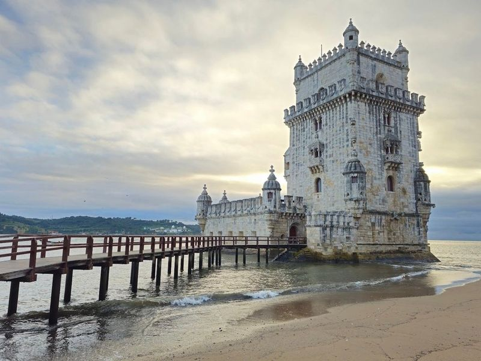
Belém Tower
Belém Tower is a medieval fortified tower located on a small river island, offering views of the estuary from its rooftop terrace. travellers can enjoy strolling around the area and taking pictures by the LOVE sign. For a unique experience, sunset cruises departing from the port provide an opportunity to explore Lisbon and its landmarks, including cruising under the San Francisco-style bridge. Families can also visit nearby attractions such as St.
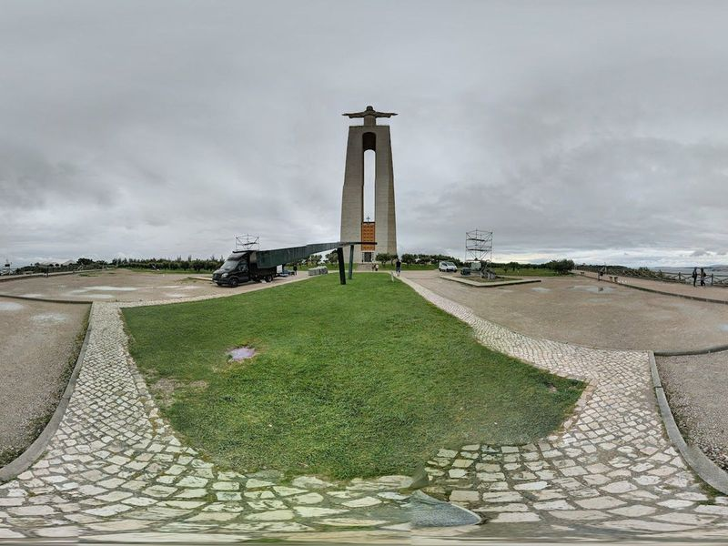
Sanctuary of Christ the King
The Sanctuary of Christ the King is a magnificent Catholic monument dedicated to the Sacred Heart of Jesus, located in Almada, just across the Tejo River from Lisbon. This impressive statue draws inspiration from Rio de Janeiro's Christ the Redeemer and stands as a symbol of faith and hope. travellers can easily reach it by taking a ferry to Cacilhas followed by a bus ride up to the site.
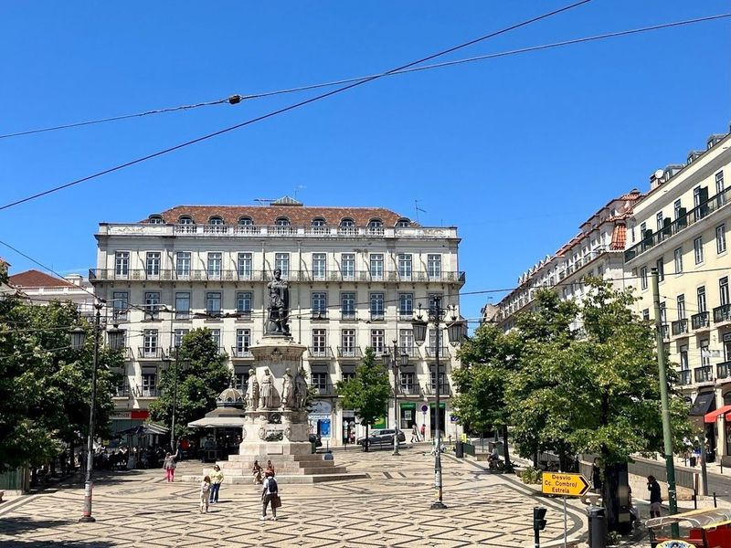
Praça Luís de Camões
Praça Luís de Camões, also known as Camoes Square, is a charming city square and a well-known meeting point in Lisbon. At its center stands a monumental statue of the legendary 16th-century poet Luis de Camoes, surrounded by smaller statues representing other Portuguese literary greats. The square serves as a convenient junction between the Chiado and Bairro Alto districts, making it an ideal spot for meeting friends or starting explorations of these vibrant neighborhoods.
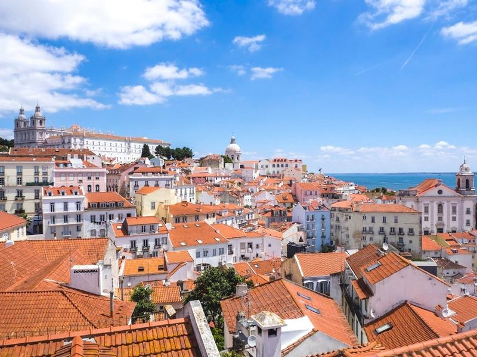
Miradouro de Santa Luzia
Miradouro de Santa Luzia is a popular observation deck in Lisbon, Portugal, offering views of the city and the Tagus River. As one of the many miradouros in Lisbon, it provides a striking perspective of the district of Alfama and its red-tiled roofs. With its pergola and dramatic vistas, it's a perfect spot for capturing Instagram-worthy snaps.
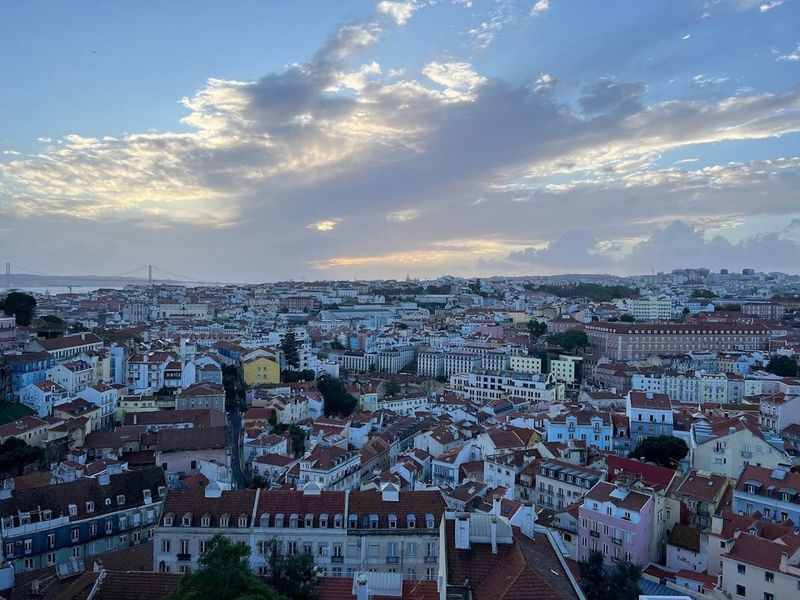
Miradouro da Senhora do Monte
Nestled in a churchyard, Miradouro da Senhora do Monte sits atop one of Lisbon's seven hills, offering unparalleled panoramic views of the city. From this vantage point, travellers can marvel at the enchanting Sao Jorge Castle, the charming Moorish quarter of Alfama with its labyrinthine streets and whitewashed buildings, and the tranquil Tagus River meandering through the landscape.

Queluz National Palace
Queluz National Palace is a 18th-century palace known for its Rococo architecture and beautiful gardens, offering a glimpse into Portuguese royalty. The site is catalogued as a palace. Queluz National Palace is listed among principal sites for Lisbon within Portugal.
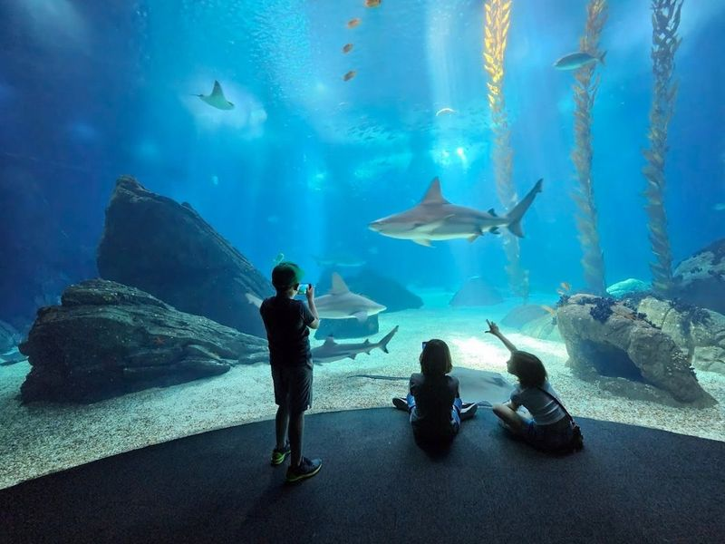
Oceanário de Lisboa
Oceanário de Lisboa is a modern aquarium located in the Parque das Nações, east of Lisbon's main attractions. It is Europe's largest indoor aquarium and features a vast saltwater tank with a variety of marine life, including sharks. travellers can explore habitats representing the North Atlantic, Pacific, and Indian Oceans where they can observe puffins, penguins, sea otters, and tropical birds. The aquarium is divided into four huge tanks representing each of the four oceans.
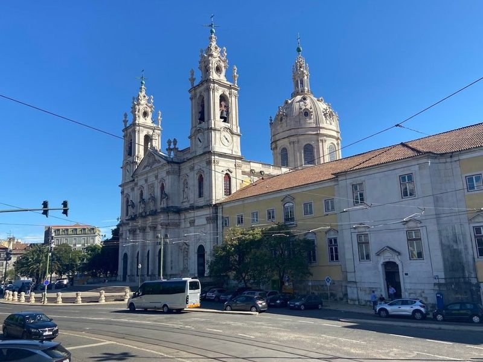
Basilica of Estrela
The Basilica of Estrela, located in the Estrela district of western Lisbon, is an impressive late 18th-century church known for its ornate Baroque architecture. The church features twin bell towers and a vast dome, with a interior adorned with multi-colored marble in shades of pink, yellow, and gray. It houses the tomb of Queen Maria I, who commissioned the basilica to honor the safe delivery of her son.
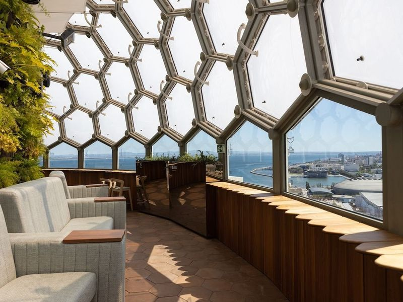
Vasco da Gama Tower BABYLON 360º
The Vasco da Gama Tower, also known as Torre Vasco da Gama, is a striking 145-meter-high nautical sail-shaped tower located in Parque das Nacoes, Lisbon. Originally designed as an observation deck for the World Expo 1998, it was later transformed into a luxury hotel. The tower offers panoramic elevators that take travellers to Babylon 360, an observation platform providing 360-degree views of Lisbon and the Tagus River.
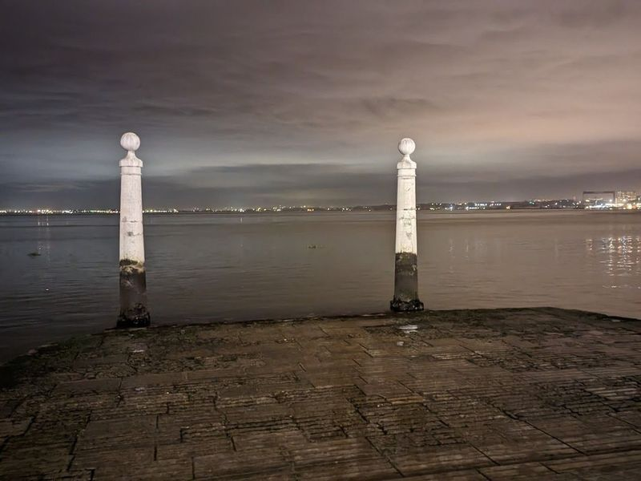
Cais das Colunas
Cais das Colunas is a late 18th-century quay that beautifully frames the Tagus River with its two elegant columns and marble steps. This picturesque spot, known for its sunset views, has been lovingly restored to reflect its original charm using 400 stones. As you stroll along this riverside area, find it hard not to be captivated by the romantic ambiance created by the shimmering city lights reflecting on the water.
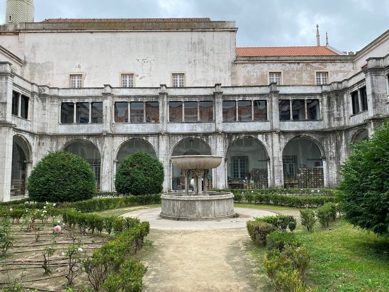
Museu Nacional do Azulejo
The National Tile Museum, located in the old convent of Madre de Deus, offers a fascinating journey through the history of decorative azulejo tiles. Housed in a 16th-century monastery with a chapel, the museum showcases the evolution of glazed tile techniques and their significance in Portuguese art and architecture. From adorning facades to depicting biblical passages, these tiles have become an integral part of Portugal's cultural heritage.
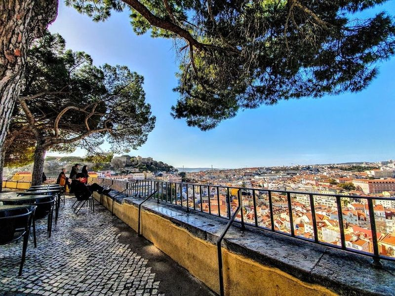
Miradouro da Graça
Miradouro da Graça is a must-visit terrace in Lisbon, offering panoramic views of the city rooftops and the surrounding waters. It provides an incredible vantage point to admire Sao Jorge Castle, the river, Mouraria district, and downtown Baixa Pombalina. Accessible via the 28 tram, this viewpoint is praised as beautiful in Lisbon.
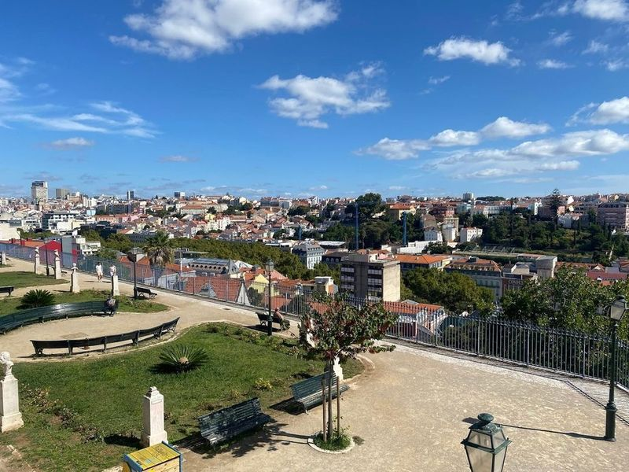
Miradouro de São Pedro de Alcântara
Miradouro de São Pedro de Alcântara is a captivating viewpoint in Lisbon, offering panoramic views of the city, including Alfama and Lisbon Castle. This urban park, located in the Bairro Alto district, provides a serene escape from the city's hustle and bustle while still allowing travellers to admire its landmarks. The terraced garden features sculptures of Greek gods and goddesses, benches for relaxation, an ornamental fountain, and a charming outdoor cafe.
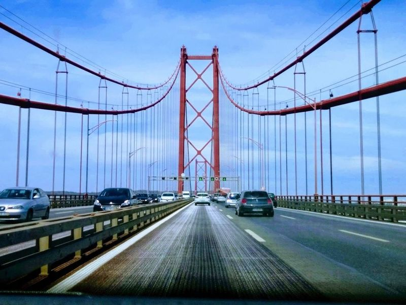
Ponte 25 de Abril
The 25 April Bridge, a magnificent Golden Gate-style suspension bridge stretching over 2km, connects Lisbon with Almada. It spans the Tagus River estuary and is renowned as one of the world's longest suspension bridges. Often likened to San Francisco's Golden Gate Bridge due to its similar design, it actually surpasses its counterpart in length by 100 meters. Originally named after Portuguese dictator Salazar, it was renamed following the April 25, 1974 revolution.
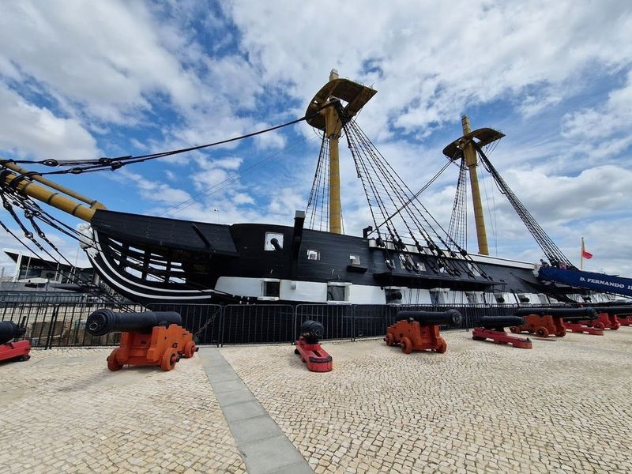
Frigate Dom Fernando II e Glória
Frigate Dom Fernando II e Glória is a restored 19th-century frigate that was launched in 1843 and permanently docked in Cacilhas. This 50-gun boat served until 1878 and had a ceremonial role until 1940. Despite being destroyed by fire in 1963, it's now examples of historic ship preservation.
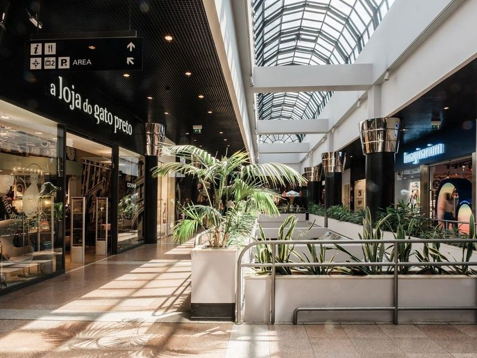
Amoreiras
Opened in 1985, Amoreiras is a renowned shopping center in Lisbon known for its unique architecture and diverse offerings. The complex features over 250 shops, boutiques, banks, a post office, and a multiplex cinema. travellers can explore upscale fashion brands like Calvin Klein and Hugo Boss as well as locally-owned stores catering to various products. With more than 50 restaurants and two beauty centers, it offers an array of dining options and wellness services.
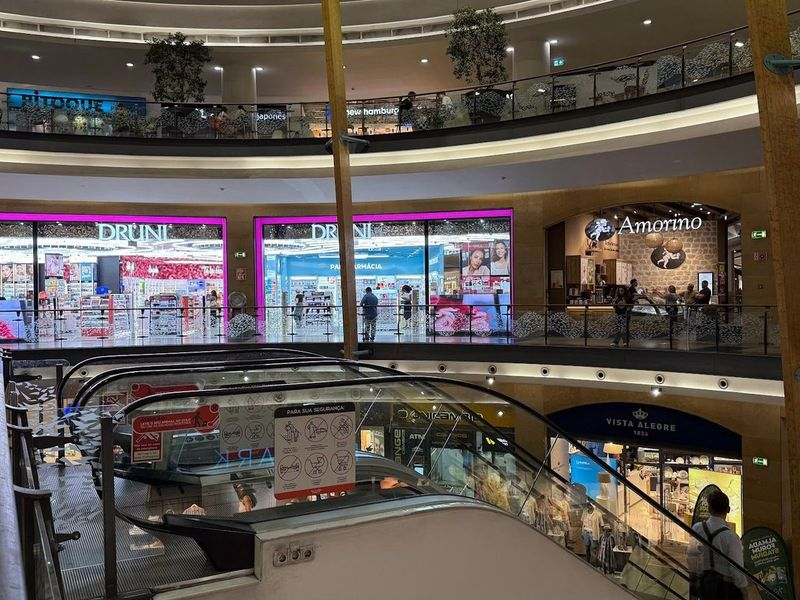
Almada Fórum
Almada Fórum is a modern and spacious shopping center located in Almada, Portugal. It boasts 230 stores spread over three levels, making it the third-largest mall in the country. The stylish center opened in 2002 and has since become a popular destination for both locals and tourists. With its contemporary design, it offers a comfortable and enjoyable shopping experience.

Praça Dom Pedro IV
Also known as Rossio Square, this bustling plaza is a popular meeting point with its wave-patterned pavement and lively atmosphere. The site is catalogued as a tourist attraction. Praça Dom Pedro IV is listed among principal sites for Lisbon within Portugal.
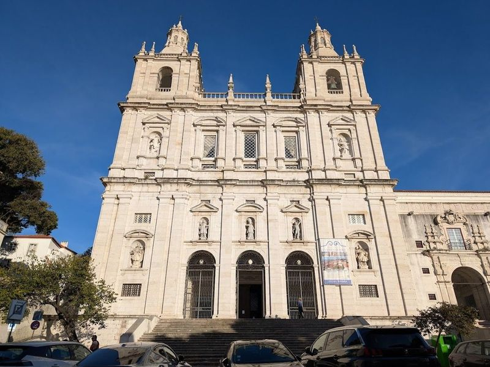
Church of St. Vincent de Fora
Igreja de São Vicente de Fora is a place of worship and the final resting place of the Braganza monarchs of Portugal. Originally constructed in the 16th century, it underwent extensive renovations and now boasts a facade following Renaissance style, Baroque altarpieces, sculptures of saints, and 18th-century tiles at its entrance. Named after St.
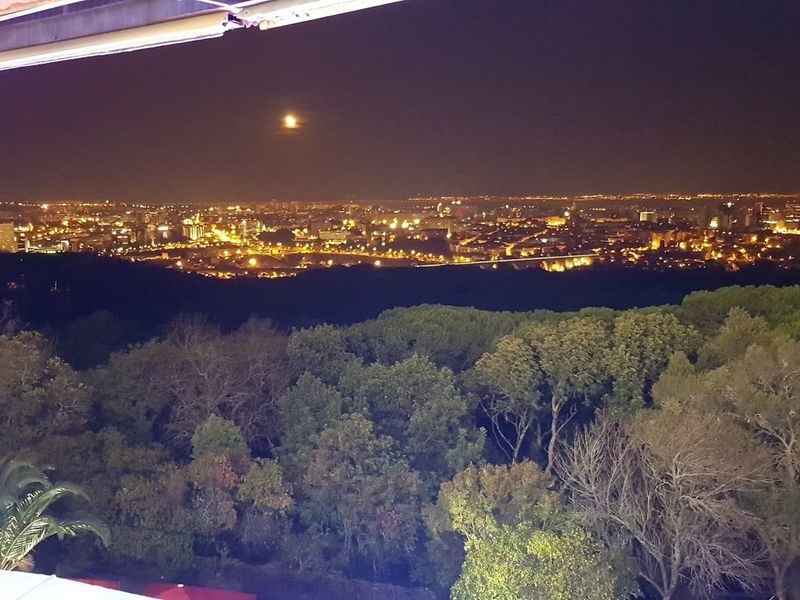
Panorâmico de Monsanto
Perched atop the Monsanto Forest Park in Lisbon, Portugal, the Panorâmico de Monsanto is an abandoned structure with a storied past. Initially designed as a high-end restaurant and event space in the 1960s, it later transformed into a nightclub before being deserted in the early 2000s. Despite its dilapidated state and adorned with graffiti, this site attracts urban explorers and photographers seeking its unique architecture and panoramic views of Lisbon and the Tagus River.
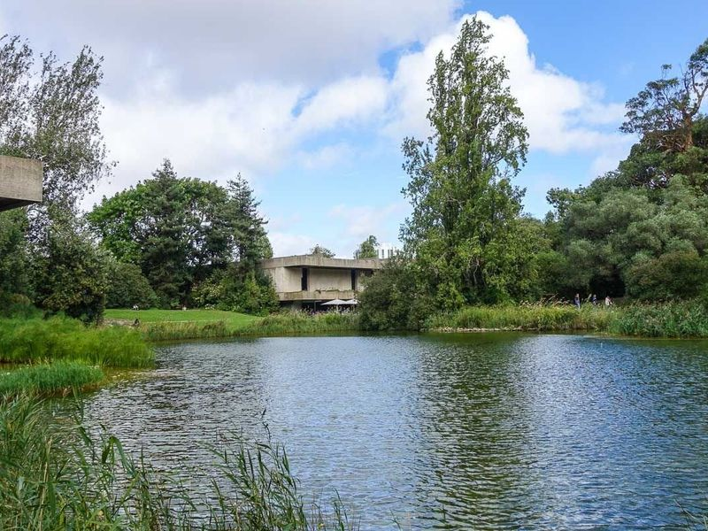
Garden of the Calouste Gulbenkian Foundation
Modernist grounds surrounding the Gulbenkian museum and concert halls in central Lisbon. Ponds, lawns, and shade trees host ducks and occasional outdoor sculpture. Paths connect the main building to the newer part of the campus near Praça de Espanha.

Game Over
The site is catalogued as a tourist attraction. Game Over is listed among principal sites for Lisbon within Portugal. Municipal and regional heritage listings document its place in the historic centre and travellers routes through Lisbon. The site is catalogued as a tourist attraction.
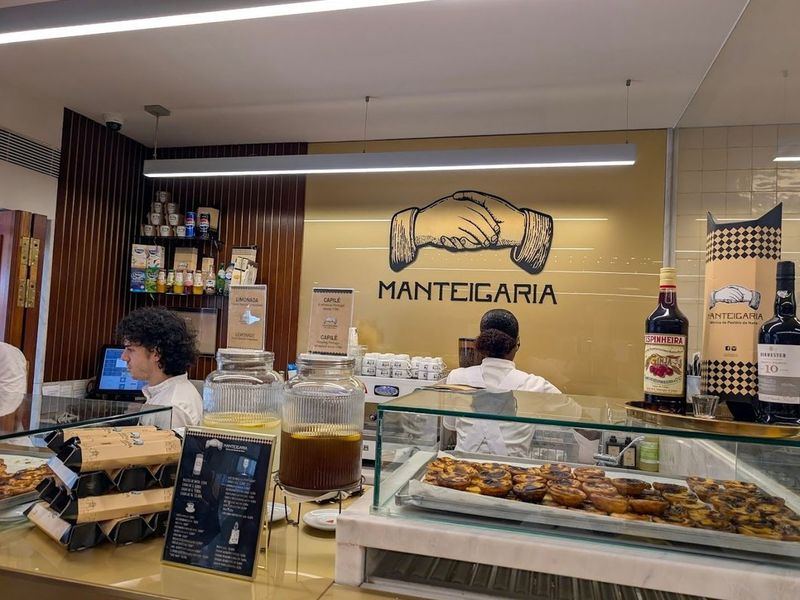
Manteigaria - Cream Pastry Factory
Manteigaria - Pastéis de Nata Factory is a must-visit spot in Lisbon for an authentic taste of the traditional Portuguese pastry, Pastel de Nata. These delightful treats have humble origins and are made with simple ingredients like eggs, flour, and sugar. They can be enjoyed warm or cold with various toppings such as chocolate sprinkles, cinnamon sugar, or sesame seeds. The shop offers top-quality pastries with friendly service and a welcoming atmosphere.
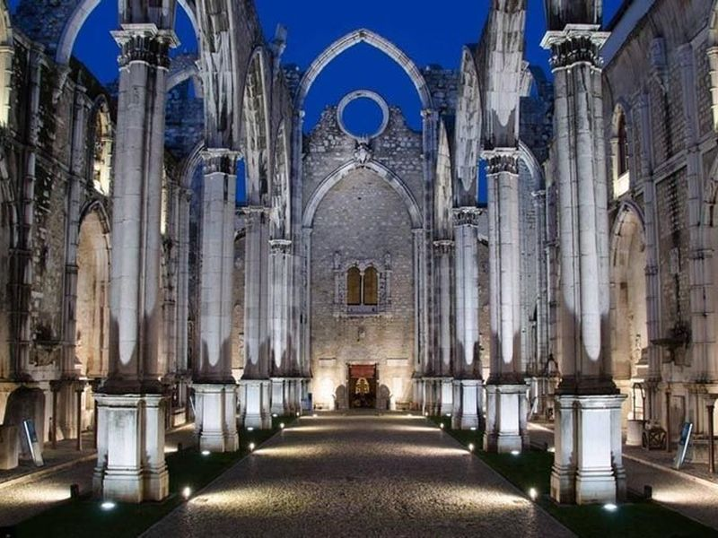
Carmo Archaeological Museum
Nestled in the heart of Lisbon's Chiado district, the Carmo Archaeological Museum is a captivating destination that offers a glimpse into the city's rich history. Housed within the haunting ruins of a Gothic church, which was tragically destroyed by an earthquake in 1755, this museum serves as both an archaeological treasure trove and a poignant reminder of nature's power.

Praça da Figueira
A bustling square in the heart of Lisbon, known for its market stalls and vibrant atmosphere. The site is catalogued as a tourist attraction. Praça da Figueira is listed among principal sites for Lisbon within Portugal. Municipal and regional heritage listings document its place in the historic centre and visitor routes through Lisbon.
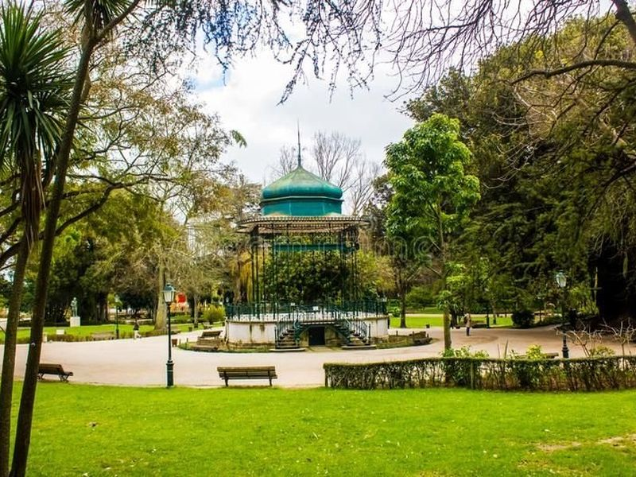
Jardim da Estrela
Jardim da Estrela is a serene and picturesque public garden located near the Basilica da Estrela and the English Cemetery. Established in the mid-19th century, it features lush greenery, charming waterfalls, and a playground for kids. The garden also houses rare trees and plants, making it an ideal spot for families, joggers, and those seeking a peaceful retreat.

Fonte Luminosa
The luminous fountain at Marquês de Pombal roundabout, where Avenida da Liberdade begins. Built for the 1940 Exhibition, it mixes classical figures with Art Deco lines. Water displays run on schedule in evenings; traffic circles the monument on multiple lanes.
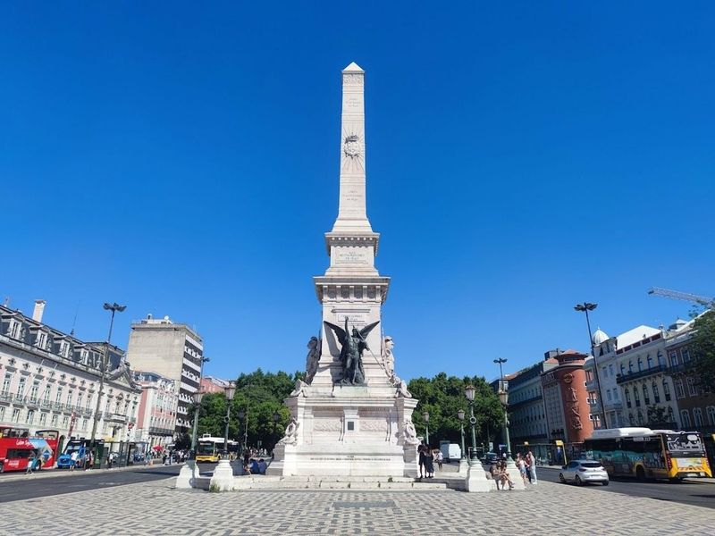
Foz Palace
Palácio Foz is an 18th-century palace In Lisbon, featuring a grand and varied architectural style. It is often used for events and guided tours must be scheduled in advance via email. The palace's sumptuous rooms are a sight to behold, although its beauty may not be immediately apparent from the outside. travellers can also explore the mysterious wine abbey below the palace.